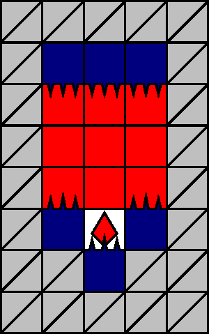
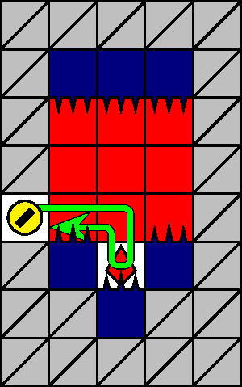

一般指針
定跡・針ヘコミ


指針
針ヘコミは，反対側の安定を確保できるように進入・横断し，ザクロを取得します．
解説
針ヘコミとは，図 3.3.1.1 のパターンを指します． 500 m, 1000 m型に出現します．赤石の側面に（±4 列のものを含めて）壁は位置しません．
針ヘコミに進入してザクロを取得する可能な経路には，パターンを横断するものと，ザクロ取得後に来た経路を引き返すもの（図 3.3.1.2）とがあります．このうち引き返す経路は，理論値的な操作が必要なため推奨されません．次に述べる緩行が可能であることから，ザクロはパターンの横断によって取得します．
針ヘコミに進入する前に反対側の安定を確保しておくと，より安全です．安定を確保せずにパターンに進入しても，針猶予を利用しながら緩行することで結果的に安全にパターンを離脱できることが多いです．緩行の方法などについては「小技・針遅延」を参照してください．
注意: 針ヘコミを横断する際は，来た経路を絶対に引き返しません．それまでの動作が理論値的でない限り，必ず刺突されます．
針ヘコミに進入できるのは，犬が赤石の側面で静止できるとき，かつそのときに限ります．このため，ステージの状況によっては，針ヘコミへの進入が不可能な場合があります．そのときは，パターンを無視して潜行します．また，針ヘコミへの進入可能性を高めるうえでは，当該階層（500 m, 600 m, 1000 m型）での急降下は推奨されません．